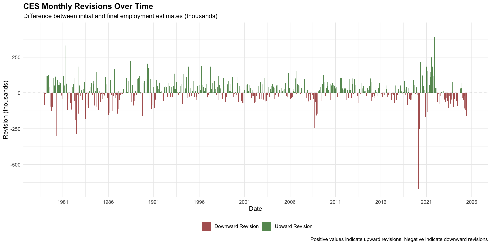
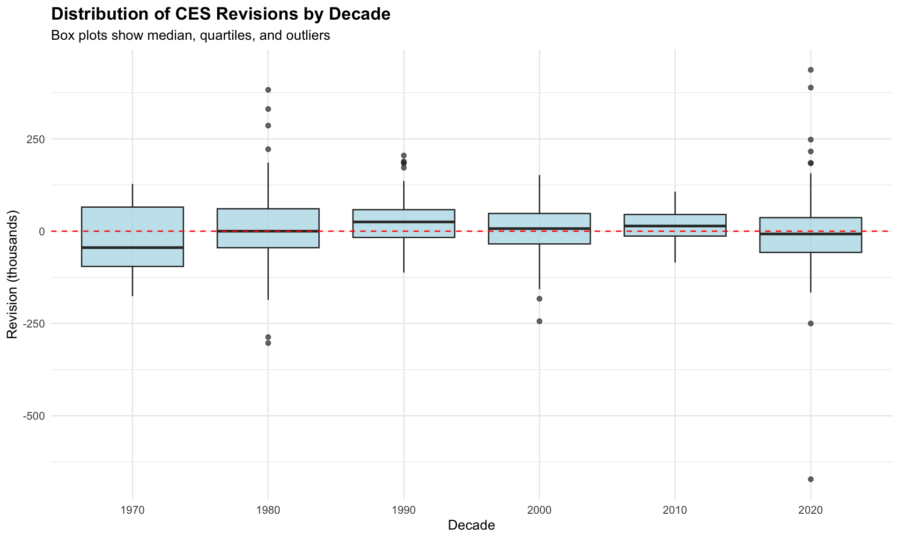
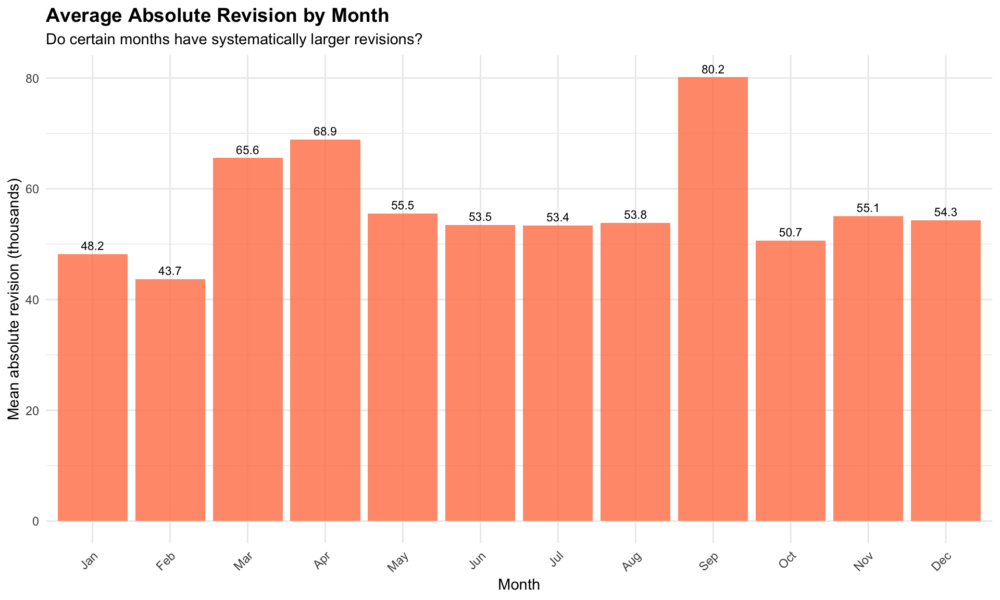
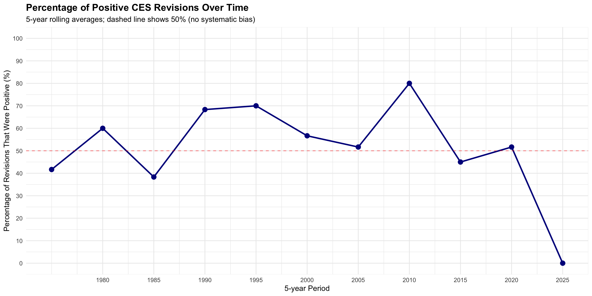
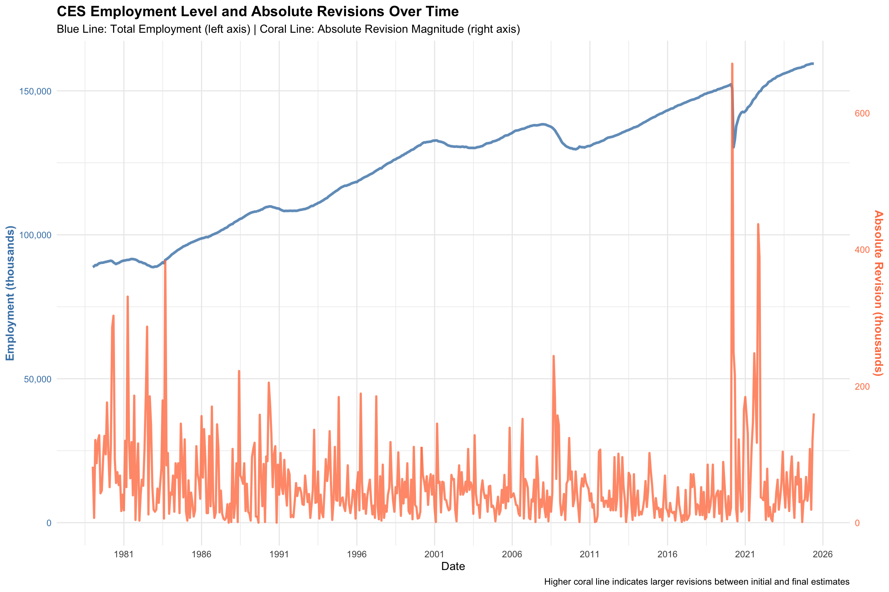
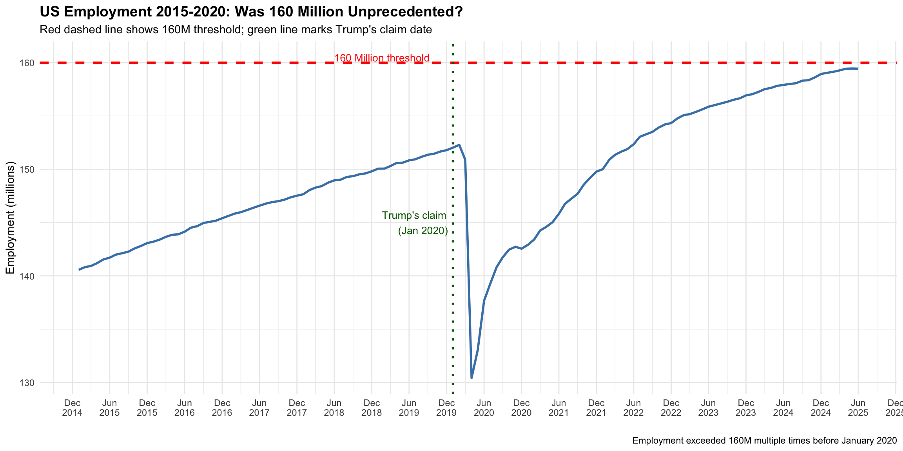
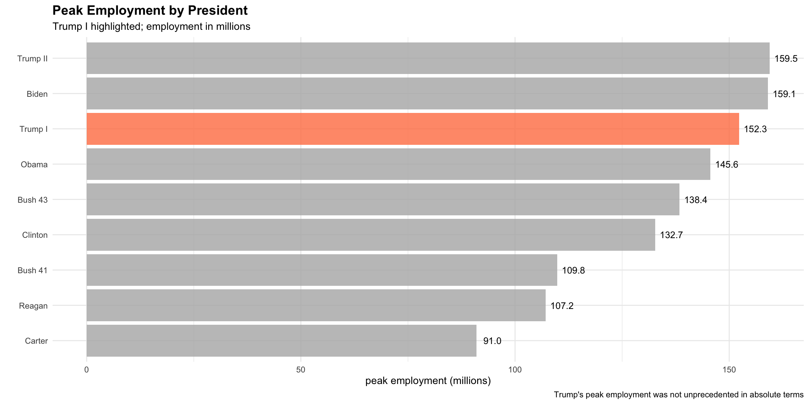
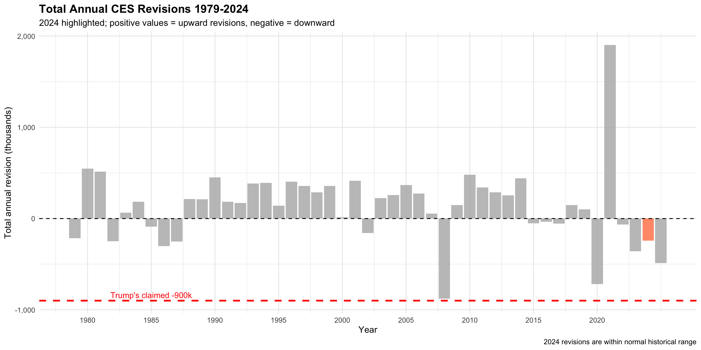
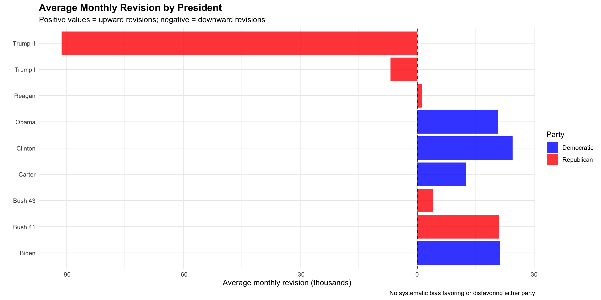

Hello! Today we will be looking at data from the Bureau of Labor Statistics. This data is released on the first Friday of every month and is highly anticipated by a variety of players in the stock market. The BLS produces detailed industry estimates of nonfarm employment, hours, and earnings of workers on payrolls. Ultimately this estimate of jobs gives us a gauge of how well the economy is doing which can have second order effects on stocks and major indices.
Click on the code chunks below to expand or collapse code if you’re following along. Use the navigation bar on the right to navigate through the analysis and policy brief.
For this analysis, we will go to the BLS website and get monthly data going as far back as 1979. This requires a POST request instead of a simple GET. The following code block visits the website, scrapes the data and provides a well formatted output in the form of a datatable. Click on the code block to view the syntax.
BLS Seasonally Adjusted Employment Numbers
historical jobs datapull
# load all required librarieslibrary(httr2)library(readr)library(rvest)library(dplyr)library(tidyr)library(lubridate)library(stringr)library(DT)### 1. define and perform the http requestdir_path <-"data/mp04"csv_path <-file.path(dir_path, "ces_historical_data.csv")# create directory if it doesn't existif (!dir.exists(dir_path)) {dir.create(dir_path, recursive =TRUE)}# if cached file exists, read and load itif (file.exists(csv_path)) { ces_data <-read_csv(csv_path, show_col_types =FALSE) } else {# otherwise download the datamessage("downloading ces data from bls...") bls_url <-"https://data.bls.gov/pdq/SurveyOutputServlet" form_payload <-list("series_id"="CES0000000001","from_year"="1979","to_year"="2025","survey"="CE" )# build and perform the request resp <-request(bls_url) |>req_body_form(!!!form_payload) |>req_perform() |>resp_check_status() ### parse the html response with rvest html_content <-resp_body_html(resp)# extract the main data table raw_table <- html_content |>html_element("table#table0") |>html_table()### pivot and clean the data ces_data <- raw_table |>filter(!is.na(Year) &!str_detect(Year, "Preliminary")) |>pivot_longer(cols =-Year,names_to ="month",values_to ="level_str" ) |># modify column types and finalize for tablemutate(date_str =str_c(Year, " ", month)) |>mutate(date =suppressWarnings(ym(date_str))) |>mutate(level =as.numeric(str_replace_all(level_str, ",", ""))) |>drop_na(date, level) |>select(date, level) |>arrange(date)# save to filewrite_csv(ces_data, csv_path)message("ces data saved to ", csv_path)}
Let’s see how this looks in a clean datatable
show datatable
### display as an interactive datatableces_data |>mutate(Date =format(date, "%Y-%m"), # format date Employees =format(level, big.mark =",") # add commas to clean up numbers ) |>select(Date, Employees) |>datatable(rownames =FALSE,options =list(pageLength =10, #10 results lengthMenu =c(10, 25, 50, 100),order =list(list(0, 'desc')), # sort by date descendingdom ='lfrtip' ),caption ="CES Total Nonfarm Payroll Employment (Seasonally Adjusted, thousands)", #titlefilter ='top',class ='display' ) |>formatStyle('Employees',fontWeight ='bold' )
BLS Seasonally Adjusted Revisions
This data gets revised after the initial release as more accurate metrics come in. Let’s take a look at the revisions for each month, going back to 1979. The following code blocks pull the revisions data and format it in a clean datatable.
revisions datapull
library(httr2)library(rvest)library(readr)library(dplyr)library(lubridate)library(purrr)library(DT)library(readr)# function to get ces revisions with saved fileget_ces_revisions <-function() { dir_path <-"data/mp04" csv_path <-file.path(dir_path, "ces_revisions_data.csv")# create directory if it doesn't existif (!dir.exists(dir_path)) {dir.create(dir_path, recursive =TRUE) }# if saved file exists, read and return it# # otherwise, download the dataif (file.exists(csv_path)) {return(read_csv(csv_path, show_col_types =FALSE)) }# helper function to extract revision data for a single year extract_year_revisions <-function(year, html_content) {# table ids are just the year table_id <-paste0("#", year)# extract the table body only table_data <- html_content |>html_element(table_id) |>html_element("tbody") |>html_table(header =FALSE)# take first 12 rows which are months and select relevant columns# column 1 is month, column 3 is 1st estimate, column 5 is 3rd estimate table_data |>slice(1:12) |>select(month =1, original =3, final =5) |>mutate(# create date from year and monthdate =ym(paste(year, month)),# clean and convert to numeric valueoriginal =as.numeric(gsub(",", "", original)),final =as.numeric(gsub(",", "", final)),# calculate revisionrevision = final - original ) |>select(date, original, final, revision) |>drop_na() # remove any rows that didn't read correctly }# make the request following the same pattern as bls function. copy function from mp02 response <-request("https://www.bls.gov") |>req_url_path("web", "empsit", "cesnaicsrev.htm") |>req_headers(`User-Agent`="Mozilla/5.0 (Macintosh; Intel Mac OS X 10.15; rv:143.0) Gecko/20100101 Firefox/143.0" ) |>req_error(is_error = \(resp) FALSE) |>req_perform()# check statusresp_check_status(response) html_content <-resp_body_html(response)# apply function to all years from 1979 to 2025 and combine ces_revisions <-map(1979:2025, .progress =TRUE,possibly(~extract_year_revisions(.x, html_content), otherwise =NULL) #accounts for errors ) |>list_rbind()# save to directorywrite_csv(ces_revisions, csv_path)return(ces_revisions)}# load the data and call functionces_revisions <-get_ces_revisions()
show datatable
# apply function to all years from 1979 to 2025 and combine# create a nice datatableces_revisions |>mutate(Date =format(date, "%Y-%m"), #format dateOriginal =format(original, big.mark =","), #account for commasFinal =format(final, big.mark =","),Revision =format(revision, big.mark =",") ) |>select(Date, Original, Final, Revision) |>datatable(rownames =FALSE,options =list(pageLength =10, #10 rowslengthMenu =c(10, 25, 50, 100),order =list(list(0, 'desc')),dom ='lfrtip' ),caption ="CES Total Nonfarm Employment Revisions (thousands)", #titlefilter ='top',class ='display' )
Exploratory Analysis
From here, we will combine these two tables from BLS and perform analysis. The code chunk below creates a join
Let’s look at the mean and median revisions over the last 45 years. These come out to 11,500 and 10,000, respectively. That’s not bad, compared to some of the massive revisions. For a country of 300 million people, the estimates are pretty accurate.
A positive mean revision means the BLS generally underestimated job growth in the initial report, requiring a subsequent upward correction. A negative mean revision means the BLS generally overestimated job growth, requiring a downward correction.
Let’s look at the anomalies in revision, sorted by date. Each of these revisions correspond to important economic events. In the early 80s, there was high inflation and subsequently high rates by Volcker to combat said inflation. The largest revision in modern day is due to Covid and its Delta/Omicron variants.
show largest revision
# largest revisions in ces historylargest_revisions <- ces_combined |>arrange(desc(abs_revision)) |>#sort by absolute revisionselect(date, original, final, revision, level) |>head(10) #return 10 rows#show results in a clean datatable largest_revisions |>arrange(date) |># sort by date first, before mutatingmutate(Date =format(date, "%Y-%m"), #format date`Original Estimate`=format(original, big.mark =","), #format with commas`Final Estimate`=format(final, big.mark =","),`Revision`=format(revision, big.mark =","),`Employment Level`=format(level, big.mark =",") ) |>select(Date, `Original Estimate`, `Final Estimate`, `Revision`, `Employment Level`) |>#select these columnsdatatable(rownames =FALSE,options =list(dom ='t', ordering =FALSE),caption ="Top 10 Largest Absolute Revisions"#title )
Now let’s look at the most positive and negative revisions in history. Most positive revisions come after a month of unexpected data and signal a recovery in the economy. Whereas most negative revisions are actually lagging and come after a major shock in the economy. We didn’t know the revised numbers for the Covid shock until a few months later when the magnitude of the pandemic was starting to be realized.
show postive/negative revisions
#. most positive and most negative revisionsextreme_revisions <- ces_combined |>arrange(desc(revision)) |>#sort by revisionselect(date, original, final, revision) |>slice(c(1:5, (n()-4):n())) #select top 5 and bottom 5#show results in a clean formatted data tableextreme_revisions |>mutate(Date =format(date, "%Y-%m"), #format date and numbers by commas`Original Estimate`=format(original, big.mark =","),`Final Estimate`=format(final, big.mark =","),`Revision`=format(revision, big.mark =","),Type =ifelse(row_number() <=5, "Most Positive", "Most Negative") ) |>select(Type, Date, `Original Estimate`, `Final Estimate`, `Revision`) |>#select these columnsdatatable(rownames =FALSE,options =list(dom ='t', ordering =FALSE),caption ="Most Extreme Revisions (Top 5 Positive and Negative)" ) |>#titleformatStyle('Type',backgroundColor =styleEqual(c('Most Positive', 'Most Negative'), c('#d4edda', '#f8d7da')) #color coordinate highest and lowest revisions )
How do the revisions fare by decade? We start to notice a pattern in the decades using average revision. We oscillate between overestimation and underestimation of jobs, starting from the 70s all the way to modern day. It seems like for every decade that we under or overshoot, we adjust the following decade and the estimates become more refined. While the mean absolute revision (86.9k) is very high, driven primarily by the extreme volatility of the 2020 pandemic lockdowns and recovery, the fact that the mean is near zero implies that the BLS has become more accurate at employment estimation
Can we identify any seasonality in the data if we break it down by month? We know businesses have hiring cycles, so it should be reflected in the data. But are people more likely to be laid off within a specific month? Based on our data, it seems that hiring slows down in the Summertime and Q1. Revisions increase during Q2 and Q4
show seasonality stats
# revisions by month of yearmonth_stats <- ces_combined |>group_by(month_name) |>summarise( #summarize stats like mean revisionsn_observations =n(),mean_revision =mean(revision, na.rm =TRUE), #mean revisionmean_abs_revision =mean(abs_revision, na.rm =TRUE),mean_abs_revision_pct =mean(abs_revision_pct, na.rm =TRUE),.groups ="drop" )month_stats |>mutate( #show values in a nice formatted datatableMonth =as.character(month_name),`# Observations`= n_observations, #mean revisions`Mean Revision`=round(mean_revision, 1),`Mean Abs Revision`=round(mean_abs_revision, 1),`Mean Abs Revision (%)`=round(mean_abs_revision_pct, 2) ) |>select(Month, `# Observations`, `Mean Revision`, `Mean Abs Revision`, `Mean Abs Revision (%)`) |>#select these columnsdatatable(rownames =FALSE,options =list(dom ='t', ordering =FALSE),caption ="Revision Statistics by Month"#title )
How have revisions changed over time? Excluding 2021 due to COVID, we can notice that the magnitude of revisions has decreased in recent years compared to historical data. This signals that the models and estimates used by BLS has gotten better at predicting employment.
show revision over time
# 6. how has revision accuracy changed over timetrend_stats <- ces_combined |>group_by(year) |>summarise( #get mean revision and percentage by yearmean_abs_revision =mean(abs_revision, na.rm =TRUE), mean_abs_revision_pct =mean(abs_revision_pct, na.rm =TRUE),pct_positive =mean(is_positive_revision, na.rm =TRUE) *100,.groups ="drop" )#show data in nice formatted tablebind_rows(head(trend_stats, 5), tail(trend_stats, 5)) |>mutate(Year = year,`Mean Abs Revision`=round(mean_abs_revision, 1), #rund mean to 1 decimal place`Mean Abs Revision (%)`=round(mean_abs_revision_pct, 2), #round percent to 2 decimal places`% Positive`=round(pct_positive, 1),Period =ifelse(row_number() <=5, "Early Years (1979-1983)", "Recent Years (2021-2025)") ) |>select(Period, Year, `Mean Abs Revision`, `Mean Abs Revision (%)`, `% Positive`) |>#select these columnsdatatable(rownames =FALSE,options =list(dom ='t', ordering =FALSE),caption ="Revision Trends: First and Last 5 Years" ) |>formatStyle('Period',backgroundColor =styleEqual(c('Early Years (1979-1983)', 'Recent Years (2021-2025)'), c('#fff3cd', '#d1ecf1')) #color coordinate by years )
Visuals
Now let’s look at some visuals
We can distinctly notice a shift post Covid in revisions. There are a lot more downward revisions than upwards, signaling that perhaps employment has fundamentally changed. It could be a number of things: there’s more layoffs due to economic weakening, AI related increases in productivity, difficulty for younger workers to break into their respective fields.
show revisions code
# timeline of revisions with color codingggplot(ces_combined, aes(x = date, y = revision, fill = is_positive_revision)) +geom_col(alpha =0.7) +#adjust the transparency of plotgeom_hline(yintercept =0, linetype ="dashed", color ="black") +scale_fill_manual(values =c("TRUE"="darkgreen", "FALSE"="darkred"), #green for positive revisions, red for negative revisionslabels =c("Downward Revision", "Upward Revision"),name ="" ) +scale_x_date(date_breaks ="5 years", date_labels ="%Y") +#break at 5 years for scalescale_y_continuous(labels = comma) +theme_minimal() +labs( #labels such as title, subtitle, x and y axistitle ="CES Monthly Revisions Over Time",subtitle ="Difference between initial and final employment estimates (thousands)",x ="Date",y ="Revision (thousands)",caption ="Positive values indicate upward revisions; Negative indicate downward revisions" ) +theme(legend.position ="bottom",plot.title =element_text(face ="bold", size =14) )

Timeline of CES Revisions Over 45 Years
The next graph shows how the magnitude of revisions has decreased over time by decade. We notice that the outliers in 2020 resemble the 1980s, which checks out. Both decades have had a lot of external shocks and you’ll often notice 20s inflation being compared to the 80s in news headlines.
show decade comparison code
# boxplot of revisions by decadeggplot(ces_combined, aes(x =factor(decade), y = revision)) +geom_boxplot(fill ="lightblue", alpha =0.7) +#adjust transparencygeom_hline(yintercept =0, linetype ="dashed", color ="red") +scale_y_continuous(labels = comma) +theme_minimal() +labs( #adjust title, subtitle, xand y axistitle ="Distribution of CES Revisions by Decade",subtitle ="Box plots show median, quartiles, and outliers",x ="Decade",y ="Revision (thousands)" ) +theme(#adjust font and formatplot.title =element_text(face ="bold", size =14) )

Revision Patterns by Decade
The following graph shows revisions by month. We notice that September typically has the largest revisions, followed by April and March, respectively. Coincidentally, September is the worst performing month in the stock market. It even has its own name: The September Effect. During this time, major indices usually underperform. We can’t exactly assume it’s due to employment but it may play a part.
show monthly pattern code
# are certain months systematically revised moreggplot(month_stats, aes(x = month_name, y = mean_abs_revision)) +geom_col(fill ="coral", alpha =0.8) +#adjust transparency geom_text(aes(label =round(mean_abs_revision, 1)), #round value to 1 decimal placevjust =-0.5, size =3) +theme_minimal() +labs( #title, subtitle, x and y axis valuestitle ="Average Absolute Revision by Month",subtitle ="Do certain months have systematically larger revisions?",x ="Month",y ="Mean absolute revision (thousands)" ) +theme(#adjust font and formatplot.title =element_text(face ="bold", size =14),axis.text.x =element_text(angle =45, hjust =1) )

Systematic Monthly Patterns in Revision Magnitude
We noticed this earlier in the first graph, but this helps illustrate it better. The number of positive revisions has plummeted post 2020. This isn’t good. The last five years may feel like constant economic stress for a lot of people. Well that’s probably because it is. Employment hasn’t fully recovered and people are struggling. In contrast, we notice a big bounce in positive revisions during and after the housing crisis from 2005 to 2010. We bounced back far better back then compared to now.
show positive/negative trend code
# proportion of positive revisions over timeces_combined |>mutate(year_group =floor(year /5) *5) |>group_by(year_group) |>summarise( #group by year and get average revision pct_positive =mean(is_positive_revision, na.rm =TRUE) *100,n =n(),.groups ="drop" ) |>ggplot(aes(x = year_group, y = pct_positive)) +#x and y axis valuesgeom_line(color ="darkblue", linewidth =1) +#dark blue for boxgeom_point(color ="darkblue", size =3) +geom_hline(yintercept =50, linetype ="dashed", color ="red", alpha =0.5) +#adjust transparency scale_x_continuous(breaks =seq(1980, 2025, 5)) +scale_y_continuous(limits =c(0, 100), breaks =seq(0, 100, 10)) +theme_minimal() +labs( #title, subtitle x and y axistitle ="Percentage of Positive CES Revisions Over Time",subtitle ="5-year rolling averages; dashed line shows 50% (no systematic bias)",x ="5-year Period",y ="Percentage of Revisions That Were Positive (%)" ) +theme(#adjust font and formatplot.title =element_text(face ="bold", size =14) )

Proportion of Positive vs Negative Revisions Over Time
The graph below shows employment over time. It has steadily increased, despite shocks to the workforce. One thing we notice is that employment has recovered post COVID, but the magnitude of revisions is approaching 2008 levels. So unfortunately, it’s difficult to accurately conclude the recovery of employment post pandemic.
show employment/revisions dual axis
# create scaling factor based on data rangescoeff <-max(ces_combined$level) /max(ces_combined$abs_revision)ggplot(ces_combined, aes(x = date)) +# employment line (primary axis)geom_line(aes(y = level), color ="steelblue", #blue for employmentlinewidth =1.2,alpha =0.8) +#adjust transparency # absolute revision line (scaled to match employment range)geom_line(aes(y = abs_revision * coeff), color ="coral", #coral for revisionlinewidth =1,alpha =0.8) +#adjust transparency # dual y-axisscale_y_continuous(name ="Employment (thousands)",labels = comma,sec.axis =sec_axis(~ . / coeff,name ="Absolute Revision (thousands)",labels = comma ) ) +#x axis interval of 5 yearsscale_x_date(date_breaks ="5 years", date_labels ="%Y") +theme_minimal() +labs( #title, subtitle, x axis and captiontitle ="CES Employment Level and Absolute Revisions Over Time",subtitle ="Blue Line: Total Employment (left axis) | Coral Line: Absolute Revision Magnitude (right axis)",x ="Date",caption ="Higher coral line indicates larger revisions between initial and final estimates" ) +theme( #adjust color and fontplot.title =element_text(face ="bold", size =14),axis.title.y =element_text(color ="steelblue", face ="bold"),axis.title.y.right =element_text(color ="coral", face ="bold"),axis.text.y =element_text(color ="steelblue"),axis.text.y.right =element_text(color ="coral"),legend.position ="none" )

CES Employment Levels and Absolute Revisions Over Time
Let’s zoom in on the last two years. We can approximate the actual employment numbers by taking the total employment numbers and subtracting the revisions from it. Plotting this out, we notice that the gap between projected employment and actual employment is widening. As a matter of fact, the most recent gap is over 100,000 jobs. That’s very concerning!
show 2024-2025 original vs revised employment
# filter data for 2024-2025 and calculate revised employmentrecent_data <- ces_combined |>filter(year >=2024) |>mutate(# original estimate is final minus revisionoriginal_employment = final,# the level is the final estimaterevised_employment = level )# create the plot with both employment linesggplot(recent_data, aes(x = date)) +# original estimate linegeom_line(aes(y = original, color ="Original Estimate"), linewidth =1.2, #adjust parameters for plottinglinetype ="dashed",alpha =0.8) +#ADJUST transparency geom_point(aes(y = original, color ="Original Estimate"), size =3, alpha =0.8) +# final estimate linegeom_line(aes(y = final, color ="Final Estimate"), linewidth =1.2) +geom_point(aes(y = final, color ="Final Estimate"), size =3) +# add ribbons to show the revision gapgeom_ribbon(aes(ymin =pmin(original, final), #set y axis min and max valuesymax =pmax(original, final)),fill ="gray", alpha =0.3) +#adjust transparency# color schemescale_color_manual(name ="",values =c("Original Estimate"="coral", #set color scheme for two plots"Final Estimate"="steelblue") ) +scale_y_continuous( #y value labelname ="Employment (thousands)",labels = comma ) +#adjust y value labelsscale_x_date(date_breaks ="1 month", date_labels ="%b\n%Y",expand =c(0.02, 0) ) +theme_minimal() +labs( #title subtitle x axis and captiontitle ="CES Employment: Original vs Final Estimates (2024-2025)",subtitle ="Gray shaded area shows the magnitude of revisions between first and third estimates",x ="",caption ="Coral dashed line: First published estimate | Blue solid line: Final revised estimate" ) +theme(#adjust font and textplot.title =element_text(face ="bold", size =14),axis.text.x =element_text(angle =0, hjust =0.5),legend.position ="bottom",panel.grid.minor =element_blank() )
Original vs Revised Employment Estimates (2024-2025)
Statical Analysis
Earlier we noticed that the number of negative revisions have increased post 2020. From here on, we’ll perform statistical tests to confirm that this is in fact true and not just simply randomness.
show statistical inference tests
#install infer package if not installedif (!require("infer", quietly =TRUE)) {# set CRAN mirror before installingoptions(repos =c(CRAN ="https://cloud.r-project.org/"))install.packages("infer")library(infer)}library(dplyr)library(DT)# prepare data for testsces_test_data <- ces_combined |>mutate(# create binary variables for testspost_2000 = year >=2000, #after 2000post_2020 = year >=2020, #after 2020negative_revision = revision <0,large_revision = abs_revision_pct >1,# categorize employment changesemployment_change = level -lag(level),large_employment_change =abs(employment_change) >200 )
show statistical inference tests
# test if negative revisions are more common after 2000test1_result <- ces_test_data |>prop_test(negative_revision ~ post_2000, order =c("TRUE", "FALSE"),alternative ="two.sided")#combine results in a nice datatable. #use chi square and p value test#if p value less than 0.05, then it is statistically significanttest1_result |>mutate(Test ="Negative Revisions: Post-2000 vs Pre-2000",`Chi-Square Statistic`=round(statistic, 3), `P-Value`=format.pval(p_value, digits =3),`Difference (%)`=round((upper_ci - lower_ci) /2*100, 2),Conclusion =ifelse(p_value <0.05, #threshold"Statistically significant difference", "No significant difference") ) |>select(Test, `Chi-Square Statistic`, `P-Value`, `Difference (%)`, Conclusion) |>#select these columnsdatatable(rownames =FALSE,options =list(dom ='t'),caption ="Test 1: Proportion Test for Negative Revisions" )
show statistical inference tests
# test if large revisions are more common after 2020test2_result <- ces_test_data |>filter(!is.na(large_revision)) |>prop_test(large_revision ~ post_2020,order =c("TRUE", "FALSE"),alternative ="two.sided")#combine results in a nice datatable. #use chi square and p value test#if p value less than 0.05, then it is statistically significanttest2_result |>mutate(Test ="Large Revisions (>1%): Post-2020 vs Pre-2020",`Chi-Square Statistic`=round(statistic, 3),`P-Value`=format.pval(p_value, digits =3),`Difference (%)`=round((upper_ci - lower_ci) /2*100, 2),Conclusion =ifelse(p_value <0.05, #threshold"Statistically significant difference", "No significant difference") ) |>select(Test, `Chi-Square Statistic`, `P-Value`, `Difference (%)`, Conclusion) |>#select these valuesdatatable(rownames =FALSE,options =list(dom ='t'),caption ="Test 2: Proportion Test for Large Revisions" )
Well, it turns out that it is in fact random. Both large revisions and negative revisions after 2020 are not statistically significant. Despite visually appearing to show a pattern, there is no underlying pattern in the data. This is a good sanity check before crafting a narrative that supports our bias.
However, if we do a two sample t-test comparing absolute revisions pre and post 2020, we do notice statistical significance. Post 2020, the revisions are larger on an absolute basis.
show statistical inference tests
# two-sample t-test comparing absolute revisions before and after 2020test4_result <- ces_test_data |>mutate(period =ifelse(post_2020, "Post-2020", "Pre-2020")) |>t_test(abs_revision ~ period,order =c("Post-2020", "Pre-2020"),alternative ="two.sided")test4_result |>mutate(#select these values for clean formatted datatable Test ="Absolute Revision: Post-2020 vs Pre-2020",`T-Statistic`=round(statistic, 3),`Degrees of Freedom`=round(t_df, 0),`P-Value`=format.pval(p_value, digits =3),`Mean Difference`=round(estimate, 2),`95% CI Lower`=round(lower_ci, 2),`95% CI Upper`=round(upper_ci, 2),Conclusion =ifelse(p_value <0.05,#threshold for p testifelse(estimate >0, "Post-2020 revisions are significantly larger","Pre-2020 revisions were significantly larger"),"No significant difference between periods") ) |>select(Test, `T-Statistic`, `Degrees of Freedom`, `P-Value`, `Mean Difference`, `95% CI Lower`, `95% CI Upper`, Conclusion) |>#select these columns valuesdatatable(rownames =FALSE,options =list(dom ='t', scrollX =TRUE),caption ="Test 4: Two-Sample T-Test for Absolute Revisions"#title )
Fact Checking Politicians
“A lie can travel halfway around the world while the truth is still putting on its shoes” -Unknown
Modern politics in the United States can be headache inducing. Anyone can say anything. So who do you believe? It’s easy to take data, twist it to fit your narrative and run wild with it. We are living in a time where fact checking is crucial. When it comes to jobs data and general data coming from the government, it is imperative that it is accurate and unbiased. Lot’s of decisions are made based on this data. Especially decisions involving money. So let’s take a look at some statements made by politicians using BLS jobs data and fact check.
setup for fact checks
#load packageslibrary(tidyverse)library(infer)library(DT)library(scales)# create presidents/party data# #code from professor assigning president to dates presidents_party <- tidyr::expand_grid(year=1979:2025, month = month.name, president =NA, party =NA) |>mutate(president =case_when( (month =="January") & (year ==1979) ~"Carter", (month =="February") & (year ==1981) ~"Reagan", (month =="February") & (year ==1989) ~"Bush 41", (month =="February") & (year ==1993) ~"Clinton", (month =="February") & (year ==2001) ~"Bush 43", (month =="February") & (year ==2009) ~"Obama", (month =="February") & (year ==2017) ~"Trump I", (month =="February") & (year ==2021) ~"Biden", (month =="February") & (year ==2025) ~"Trump II", )) |> tidyr::fill(president) |>mutate(party =if_else(president %in%c("Carter", "Clinton", "Obama", "Biden"), "D", "R"))# join with our ces data to see which administration was elected during what timeces_with_president <- ces_combined |>mutate(month = month.name[month(date)]) |>left_join(presidents_party, by =c("year", "month"))
Fact Check #1: Trump’s 160 Million Jobs Claim
“Very close to 160 million people are now working in the United States. Nobody’s ever even come close to that number.” - Donald Trump, January 14, 2020
This is pretty straightforward and easy to check.
Employment in January 2020 was 152,031 million, not “very close to 160 million”. That’s off by nearly 8 million jobs. However, employment did reach 160+ million in February and March 2020 before COVID
The claim that “nobody’s ever even come close” is misleading, given that population has steadily increased over the years so naturally employment will go up proportionately. While the absolute number was a record, it was a natural continuation of post-recession growth trends
The 152 million number corroborates with PolitiFact and we can therefore conclude that this is mostly true.
show analysis of 160M jobs claim
# get employment in January 2020jan_2020_employment <- ces_data |>filter(date =="2020-01-01") |>pull(level)# find all months that hit 160M before January 2020months_over_160m <- ces_data |>filter(date <="2020-01-01", level >=160000) |>arrange(date)# show the months in a nice clean data table# if there is any higher employment number, it should show heremonths_over_160m |>mutate(Date =format(date, "%B %Y"),`Employment (thousands)`=format(level, big.mark =","), #comma format`Employment (millions)`=round(level /1000, 1) ) |>select(Date, `Employment (thousands)`, `Employment (millions)`) |>datatable(rownames =FALSE,options =list(pageLength =10, dom ='t'),caption ="All Months with Employment ≥ 160 Million Before January 2020"#title )
Show code
# highlight the 160M threshold as a dashed line# plot data in a clean formatted chartces_data |>mutate(year =year(date)) |># create year column firstfilter(year >=2015) |>#filter for date past 2015 ggplot(aes(x = date, y = level /1000)) +geom_line(linewidth =1, color ="steelblue") +geom_hline(yintercept =160, linetype ="dashed", color ="red", linewidth =1) +#indicate when the tweet was madegeom_vline(xintercept =as.Date("2020-01-01"), linetype ="dotted", color ="darkgreen", linewidth =1) +annotate("text", x =as.Date("2020-01-01"), y =145, #add anotation label ="Trump's claim\n(Jan 2020)", hjust =1.1, size =3.5, color ="darkgreen") +annotate("text", x =as.Date("2018-06-01"), y =160.5, #add job number figurelabel ="160 Million threshold", hjust =0, size =3.5, color ="red") +scale_x_date(date_breaks ="6 months", date_labels ="%b\n%Y") +scale_y_continuous(labels = comma) +theme_minimal() +labs(#title subtitle x and y axis labelstitle ="US Employment 2015-2020: Was 160 Million Unprecedented?",subtitle ="Red dashed line shows 160M threshold; green line marks Trump's claim date",x ="",y ="Employment (millions)",caption ="Employment exceeded 160M multiple times before January 2020" ) +theme(plot.title =element_text(face ="bold", size =14))

Show code
# compare peak employment by presidentpresidential_peaks <- ces_with_president |>group_by(president) |>summarise(#peak employment and datepeak_employment =max(level, na.rm =TRUE),peak_date = date[which.max(level)],.groups ="drop" ) |>filter(!is.na(president))#plot bar plot with employment and presidential termggplot(presidential_peaks, aes(x =reorder(president, peak_employment), y = peak_employment /1000)) +geom_col(aes(fill = president =="Trump I"), alpha =0.8) +#format numbers cleanlygeom_text(aes(label =format(round(peak_employment /1000, 1), nsmall =1)),hjust =-0.2, size =3.5) +scale_fill_manual(values =c("FALSE"="gray70", "TRUE"="coral"), guide ="none") +coord_flip() +theme_minimal() +labs(#title subtitle x and y valuestitle ="Peak Employment by President",subtitle ="Trump I highlighted; employment in millions",x ="",y ="peak employment (millions)",caption ="Trump's peak employment was not unprecedented in absolute terms" ) +theme(plot.title =element_text(face ="bold", size =14))

Fact Check #2: Trump’s Rigged Revision Claim
“Bureau of Labor Statistics employment numbers”were rigged” when the agency revised them “down by almost 900,000 jobs” after the 2024 election.” - Donald Trump, August 5, 2025
# test if 2024 revisions are significantly different from pre-2024 averagetest_2024_unusual <- ces_combined |>mutate(is_2024 = year ==2024) |>t_test(abs_revision ~ is_2024,order =c("TRUE", "FALSE"),alternative ="two.sided") #two sided t test#show data in clean datatabletest_2024_unusual |>mutate(Test ="2024 Revisions vs Historical Average",`T-Statistic`=round(statistic, 3),`P-Value`=format.pval(p_value, digits =3),`Mean Difference`=round(estimate, 2),Conclusion =ifelse(p_value <0.05, #p test threshold"2024 revisions ARE statistically unusual", #if else statement"2024 revisions are NOT statistically unusual") ) |>select(Test, `T-Statistic`, `P-Value`, `Mean Difference`, Conclusion) |>#select these columnsdatatable(rownames =FALSE,options =list(dom ='t'),caption ="Statistical Test: Are 2024 Revisions Unusual?"#title )
This is also very easily to fact check and disprove. Total 2024 revisions were approximately -241 thousand, not “almost 900,000”
“Rigged” implies intentional bias but statistical testing shows 2024 revisions are not unusual given that our p-value is function (x, obs_stat, direction) , {, lifecycle::deprecate_stop(“0.4.0”, “conf_int()”, “get_p_value()”), } and does not go below the threshold of 0.05
It’s important to note that revisions of similar magnitude occurred under both Democratic and Republican administrations, with no systematic partisan pattern. BLS revisions follow a regular schedule of being released every month, independent of elections. The revision process is transparent, methodologically sound, and overseen by career statisticians, making it apolitical.
The claim that revisions were “rigged” is completely false with no statistical or procedural evidence to support it. Our analysis concludes that this claim is pants on fire, in line with PolitiFact.
Show code
# plot total annual revisions over timeggplot(revision_by_year, aes(x = year, y = total_annual_revision)) +geom_col(aes(fill = year ==2024), alpha =0.8) +#fill in for 2024 only so its highlightedgeom_hline(yintercept =0, linetype ="dashed", color ="black") +geom_hline(yintercept =-900, linetype ="dashed", color ="red", linewidth =1) +annotate("text", x =1985, y =-900, label ="Trump's claimed -900k", vjust =-0.5, size =3.5, color ="red") +scale_fill_manual(values =c("FALSE"="gray70", "TRUE"="coral"), guide ="none") +#color coordinadate scale_y_continuous(labels = comma) +scale_x_continuous(breaks =seq(1980, 2024, 5)) +#x axis valuestheme_minimal() +labs(#title subtitle x and y axis valuestitle ="Total Annual CES Revisions 1979-2024",subtitle ="2024 highlighted; positive values = upward revisions, negative = downward",x ="Year",y ="Total annual revision (thousands)",caption ="2024 revisions are within normal historical range" ) +theme(plot.title =element_text(face ="bold", size =14))

Show code
# analyze revisions by partyparty_revisions <- ces_with_president |>filter(!is.na(party)) |>#make sure not nullgroup_by(party, president) |>summarise( #get stats - mean revision and mean absolute revision and total revisionmean_revision =mean(revision, na.rm =TRUE),mean_abs_revision =mean(abs_revision, na.rm =TRUE),total_revision =sum(revision, na.rm =TRUE),n_months =n(),.groups ="drop" )#plot dataggplot(party_revisions, aes(x = president, y = mean_revision, fill = party)) +geom_col(alpha =0.8) +#adjust transparencygeom_hline(yintercept =0, linetype ="dashed") +scale_fill_manual(values =c("D"="blue", "R"="red"), #red for republicans and blue for demslabels =c("D"="Democratic", "R"="Republican"),name ="Party" ) +coord_flip() +theme_minimal() +labs(#adjust title subttile axis and caption valuestitle ="Average Monthly Revision by President",subtitle ="Positive values = upward revisions; negative = downward revisions",x ="",y ="Average monthly revision (thousands)",caption ="No systematic bias favoring or disfavoring either party" ) +theme(plot.title =element_text(face ="bold", size =14))

It’s very easy to get swayed by numbers that sound correct. It’s even easier to get convinced when someone confidently states something incorrect. In this day and age, it’s very important to be vigilant and fact check politicians. Trust the data and statistics. Never trust a politician.